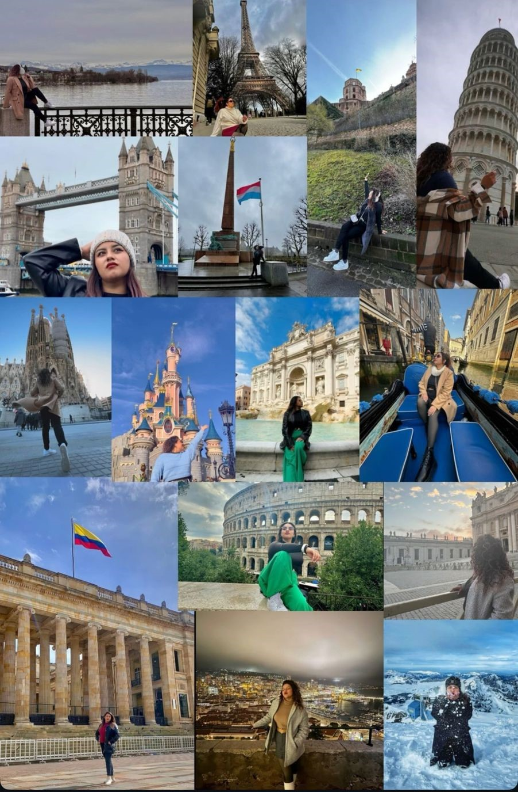

Aventuras y Kilómetros

"Aventuras y Kilómetros" es el lugar donde comparto mis experiencias, anécdotas y consejos de mis viajes, tanto nacionales como internacionales. Desde mi país hasta las ciudades más vibrantes del mundo, cada historia está llena de descubrimientos, aventuras y momentos que han dejado recuerdos. Acompáñame en este viaje virtual mientras exploro culturas, paisajes y emociones, y te ayudo a planear tu próxima aventura, ya sea cerca de casa o al otro lado del planeta.
Soy Ana, tengo 28 años y soy una apasionada viajera que disfruta descubrir nuevos lugares, culturas y paisajes, tanto en mi propio país como alrededor del mundo. He tenido la suerte de explorar diversos estados y países, y cada experiencia me ha dejado aventuras inolvidables. Me encanta la fotografía, y siempre llevo mi cámara para capturar esos momentos especiales que hacen que cada destino sea aún más memorable. Además, tengo un gran amor por los animales. Este blog es mi manera de compartir mis aventuras, tips y emociones con otros viajeros, para inspirarte a seguir explorando y a vivir nuevas experiencias
Top de mis lugares favoritos
- Florencia
- Puerto Escondido
- Alpes Suizos
- Cenote San Ignacio
- Luxemburgo
{kind=link}
{kind=link}
{kind=link}
{kind=link}
{kind=link}